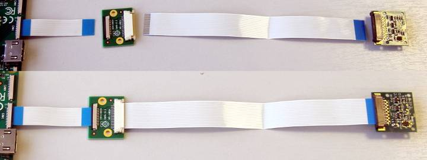
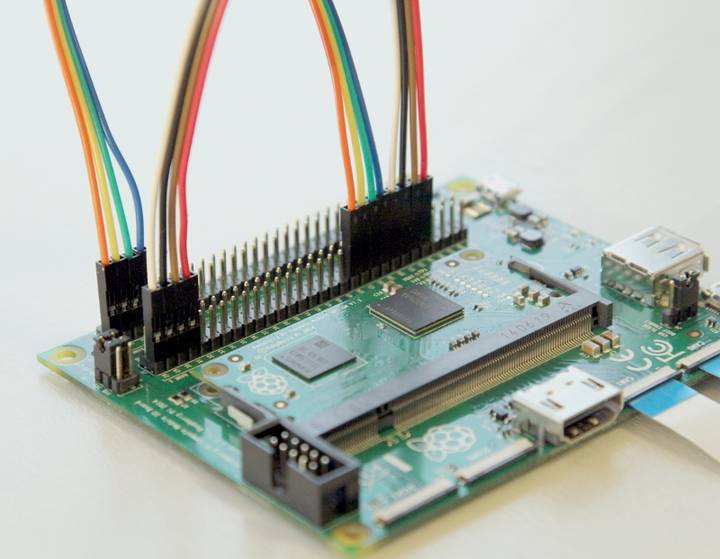
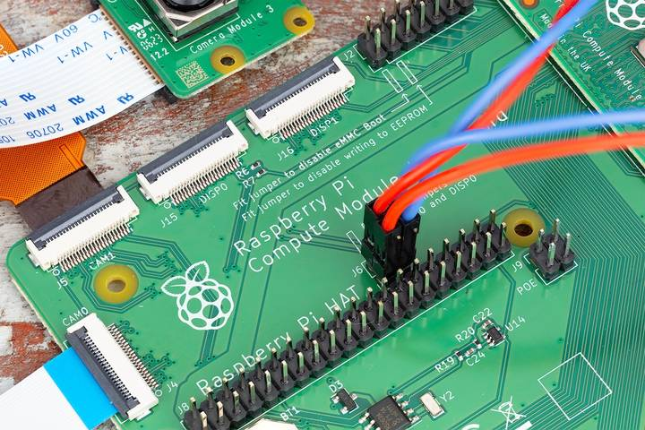

To connect two cameras to a Compute Module, complete the following steps:
Connect the Camera Module to the CAM0 port using a LUM-CAMERA board or a

(CM1, CM3, CM3+, and CM4S only): Connect the following GPIO pins with jumper cables: * 28 to CD0_SDA * 29 to CD0_SCL * 30 to CAM0_I01 * 31 to CAM0_I00

(CM4): Connect the J6 GPIO pins with two vertical-orientation jumpers.

(CM1, CM3, CM3+, and CM4S only): Add the following directive to /boot/firmware/config.txt to assign GPIO 31 as the CAM0 regulator:
dtparam=cam0_reg
Simply add the appropriate directive to /boot/firmware/config.txt to manually configure the driver for your camera model:
| camera model | directive |
|---|---|
| v1 camera | dtoverlay=ov5647,cam0 |
| v2 camera | dtoverlay=imx219,cam0 |
| v3 camera | dtoverlay=imx708,cam0 |
| HQ camera | dtoverlay=imx477,cam0 |
| GS camera | dtoverlay=imx296,cam0 |
sudo reboot.Run the following command to check the list of detected cameras:
$ lumcam-hello --list
You should see both camera models, referred to by the driver directives in the table above, in the output.
Related topic: